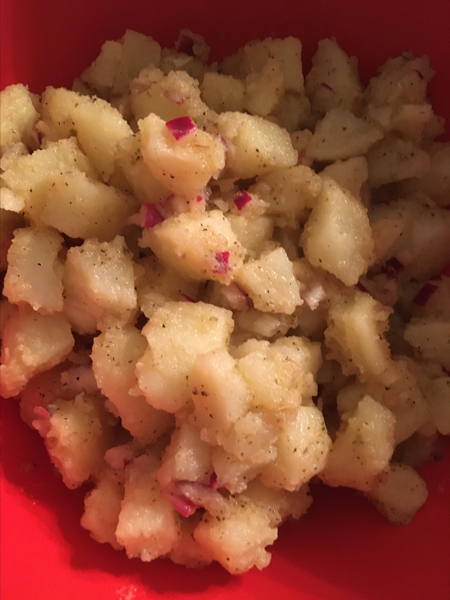

Potato Salad

Light, easy, hard to mess up, easily multiplied.
ingredients
- 12 red potatoes
- ¼ cup chopped green onion
- ¼ cup olive oil
- ¼ cup red wine vinegar
- 1 ½ teaspoons fresh lemon juice
- ½ teaspoon garlic powder
- ½ teaspoon onion powder
- ½ teaspoon coarse salt, or to taste
- ½ teaspoon ground black pepper, or to taste
- ¼ teaspoon dried oregano
- ¼ teaspoon white sugar
- ¼ teaspoon dried rosemary, crumbled
- 1 pinch ground red pepper
Directions
- Place red potatoes into a large pot and cover with salted water; bring to a boil. Reduce heat to medium-low and simmer until tender, about 25 minutes. Drain and chill in freezer until cold, about 30 minutes.
- Slice potatoes and place into a large salad bowl; toss potatoes with green onion. Whisk olive oil, red wine vinegar, lemon juice, garlic powder, onion powder, salt, black pepper, oregano, sugar, rosemary, and red pepper in a bowl. Pour the dressing over the potatoes and toss. Serve immediately or chill until serving time.
Home